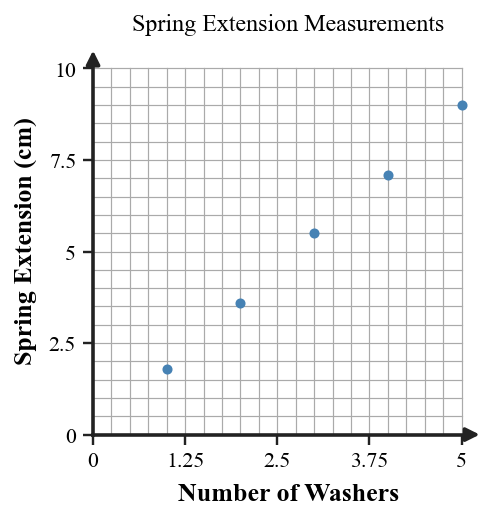
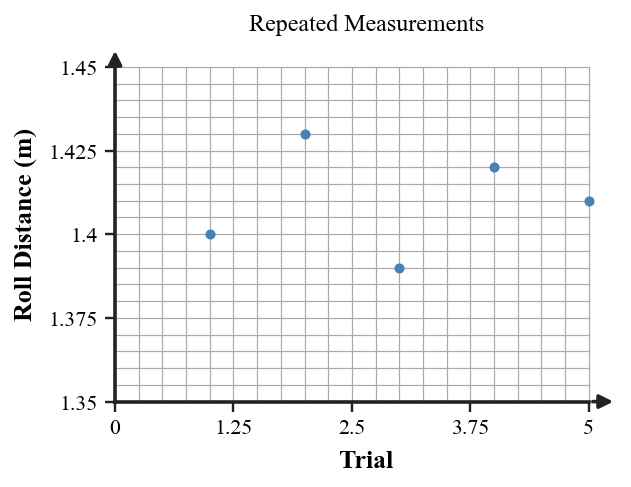

Thinking Like a Physicist
Core idea: Physics separates what was observed from what was inferred, then uses evidence and models to build claims that can be tested.
You will practice reading measurements, judging evidence, writing testable claims, and interpreting a simple formula as a model of a physical relationship.
Learning Target
Students will explain how physics uses observation, measurement, evidence, models, and testable claims to understand the natural world.
I can statements
- I can distinguish between an observation, inference, hypothesis, law, and theory.
- I can explain why a claim must be testable to be scientific.
- I can use evidence from a short scenario to decide whether a physics explanation is supported and explain why formulas in physics are guides for thinking, not just tools for calculation.
Vocabulary Preview
Skim the terms first. In the blank space, jot a word, example, picture, or question you already connect to each term. Definitions come later.
| Term | Before the reading: my connection / question |
|---|---|
| observation | |
| inference | |
| hypothesis | |
| scientific law | |
| scientific theory | |
| evidence | |
| model | |
| testable claim |
What's To Come
This is a long-range preview for this section. Do not solve it yet. Circle anything familiar, underline symbols, labels, conditions, data, or features that seem important, and write short notes about what you think may matter later.
A class hangs 1, 2, 3, 4, and 5 identical washers from the same spring and measures the spring extension. Study the graph.

(a) Write one statement that is directly observable from the data. (b) Write one inference that goes beyond the measurements. (c) State one claim that could be tested with another set of measurements.
Content: Read, Represent, Annotate, Apply
Directions
Read in short chunks. Annotate the prose and representations together. Mark evidence, conditions, important quantities, labels, patterns, and questions.
Reading 1: Observation, Measurement, and Inference
An observation is something recorded directly with the senses or a measuring tool. A measured distance, time, angle, count, or temperature belongs in this category because another person can check the same quantity. An inference goes one step farther: it is an interpretation of what the observations may mean. Physics needs both, but they should not be confused.
Measurements become useful when the quantity and its unit are clear. Eratosthenes did not measure Earth directly from one side to the other. He measured a shadow angle in Alexandria, combined it with the known separation between cities, and used a geometric model to connect those observations to Earth's circumference. The measurements were evidence; the geometric reasoning linked the evidence to a larger claim.

When you annotate a physics scenario, mark measured facts first. Then label any statement that explains, predicts, or generalizes beyond those facts as an inference. Keeping the two categories separate makes the reasoning easier to test and revise.
Stop and Discuss
- Which parts of the Earth-measurement example are direct measurements, and which part is an inference from a model?
- Why would a number without a unit be weaker evidence than the same measurement with its unit?
Example 1: Separate Measurement from Interpretation
A notebook entry says: "The metal ball traveled 82 cm before stopping." Is that an observation or an inference? Explain.
You Try It 1: Report Only What Was Measured
A second trial travels 79 cm. Record one observation that uses both measurements without explaining why they differ.
Reading 2: Testable Claims and Repeated Evidence
A hypothesis is useful in science when it leads to a measurable test. A scientific testable claim must tell us what observation or measurement could count against it. A statement can sound reasonable and still fail as a scientific claim if no possible measurement could challenge it.
One measurement can be informative, but repeated measurements reveal more. If repeated values cluster tightly, they show consistency. If they spread widely, the variation itself becomes evidence that deserves attention. Repetition does not make a claim automatically true; it gives a stronger picture of the pattern and the uncertainty in the measurements.

Evidence is the set of observations and measurements used to evaluate a claim. Strong reasoning names the evidence and explains how it supports, weakens, or fails to decide the claim.
Stop and Discuss
- What measurement would make a claim about a rolling object genuinely testable?
- What can you learn from the spread of repeated measurements that you cannot learn from a single trial?
Example 2: Test a Scientific Claim
A student claims, "Objects fall because they want to be near Earth." What makes this weak as a scientific hypothesis?
You Try It 2: Turn a Claim into a Measurable Prediction
Rewrite the claim so that it makes a testable prediction involving a measurement.
Example 3: Judge the Strength of Repeated Evidence
Two groups test whether surface type changes how far a toy car rolls. Group A records one trial; Group B records five trials on each surface. Which evidence set is more useful and why?
You Try It 3: Interpret Variation Across Trials
A group measures roll distances of 1.42 m, 1.39 m, 1.44 m, and 1.41 m on the same surface. What can the repeated measurements tell you?
Reading 3: Models, Laws, Theories, and Formulas
A scientific law summarizes a regular pattern found in nature. A scientific theory is a broad explanatory framework supported by a large body of evidence and tested ideas. These words do not mean “guess” and “fact” on a ladder. Laws and theories do different jobs: one describes dependable patterns, while the other organizes explanations for why related phenomena behave as they do.
A model can be a diagram, a verbal description, a physical setup, a graph, or an equation. Good models preserve the relationships that matter for the question, even though they leave out many real-world details. A formula is therefore not just a set of symbols to substitute into; it is a compact statement about how quantities are related.
Stop and Discuss
- How is a model useful even though it leaves out details?
- What should you be able to say in words before using an equation in a calculation?
In the model $R=\frac{d}{t}$, $R$ compares a measured distance $d$ with the elapsed time $t$.
Read it aloud as: rate equals distance per unit time. The unit of $R$ comes from the distance unit divided by the time unit.
Example 4: Read a Formula as a Physical Model
A model says $R=\frac{d}{t}$, where $R$ is a measured rate, $d$ is distance, and $t$ is time. What physical comparison does the ratio represent?
You Try It 4: Calculate and Interpret a Measured Rate
For a trial with $d=24$ m and $t=6$ s, calculate $R$ and interpret the result in words.
Vocabulary Definitions
| Term | Meaning in this section |
|---|---|
| observation | A direct description or measurement recorded from a phenomenon. |
| inference | An interpretation or explanation that goes beyond what was directly observed. |
| hypothesis | A proposed explanation or prediction that can be tested with evidence. |
| scientific law | A concise description of a regular pattern in nature that has strong evidence behind it. |
| scientific theory | A broad explanatory framework supported by a large body of evidence and repeatedly tested ideas. |
| evidence | Observations or measurements used to evaluate a claim or model. |
| model | A simplified representation that keeps the relationships important to a question. |
| testable claim | A claim for which a possible observation or measurement could support or challenge it. |
Summary
- Observations and measurements are direct records; inferences explain or interpret those records.
- Scientific claims are useful when evidence could test them and, in principle, show them to be wrong.
- Repeated measurements reveal both a pattern and the amount of variation in the evidence.
- Models, including formulas, connect quantities and ideas while intentionally simplifying reality.
- A result is stronger when you can explain what it means physically, not only calculate a number.
Common Mistakes
| Mistake | Why it is tempting | Check instead |
|---|---|---|
| Calling an explanation an observation. | The explanation may feel obvious. | Ask: Could a measuring tool or direct sense record this exact statement? |
| Treating one trial as proof. | One clean result can look convincing. | Look for repeated evidence and notice variation across trials. |
| Writing a claim that cannot be tested. | Plausible language can sound scientific. | Name a measurement that could support or challenge the claim. |
| Using a formula without interpreting it. | Substitution can produce an answer quickly. | State what each quantity and the resulting unit mean in the physical situation. |